PRIVATE · LOCAL ONLYCinco Identity Generator 2.5
Interactive software recreation with microphone input, a working window manager, original computer replies, and generated whole-person dance videos. Friends upload a photograph and generate new costumes and motion after their commands.
| Paul voice + keyboard | 41 / 41 passed |
|---|
| Source-timed replay | 6 / 6 passed |
|---|
| Fresh Thomas upload + microphone | 6 / 6 passed |
|---|
| Audible source computer phrases | 14 / 14 passed |
|---|
The sketch sequence
This recording uses real STT transcripts scheduled at the source response cues and cached generated Paul clips. It isolates fidelity from generation latency. The screen and browser-output audio were captured separately and muxed with an estimated recording-start offset; exact timestamps are in the timing report.
Fresh identity, unseen commands
The test uploaded Thomas’s image into a new profile and passed a spoken WAV through Chromium’s microphone device, MediaRecorder, speech recognition and the command model. The remaining modifications used keyboard input. No source dancer video was played.
SHIMMYCELERY · baseGeneration request to ready: 24.1 secondsSHIMMYCELERY · baseGeneration request to ready: 4.0 secondsWOBBLETOPPURPLE · baseGeneration request to ready: 21.1 secondsWOBBLETOPPURPLE · smileGeneration request to ready: 21.1 seconds Audio evidence
The exact sketch replies play source recordings. New dance acknowledgments use the same “Okay.” Personalized greetings and alerts retain the source phrase around a generated name. Generated name pronunciation and arbitrary new speech remain approximations; the system does not claim that a voice model produces bit-identical novel speech.
Source waveform checks · Personalized voice grade · Generated music grade · Novel-video quality grades
Visual comparison
The latest automated UI estimate is 95/100. Perceptual model grades vary; they are diagnostic estimates, not proof of identity. Window coordinates, source cues, actual media provenance and screenshots are retained for inspection.
celery
Original reference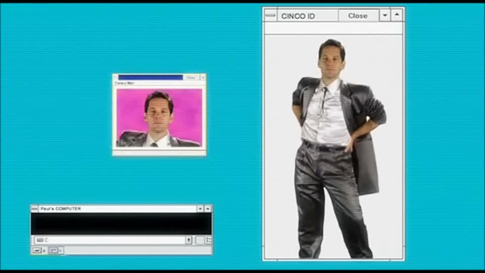
Generated interactive clone
engaged
Original reference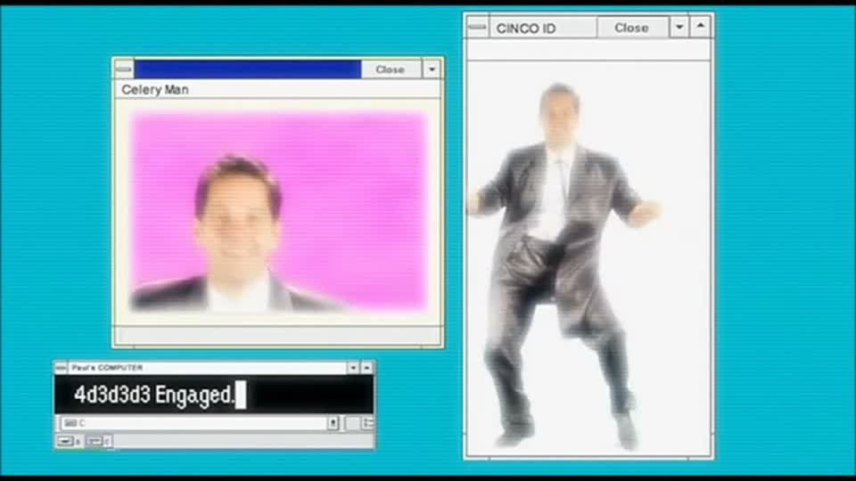
Generated interactive clone
oyster
Original reference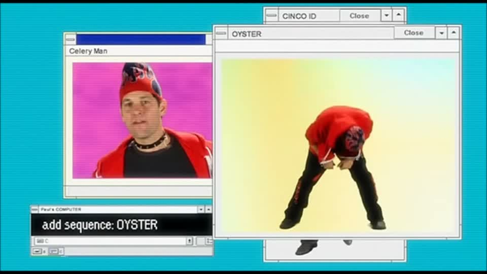
Generated interactive clone
intro
Original reference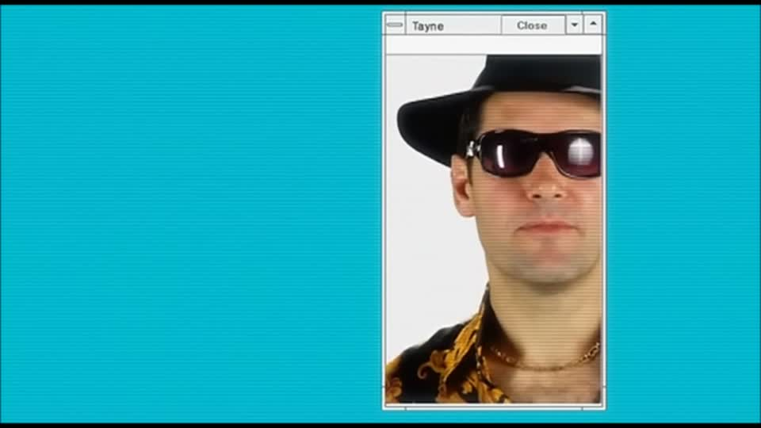
Generated interactive clone
tayne
Original reference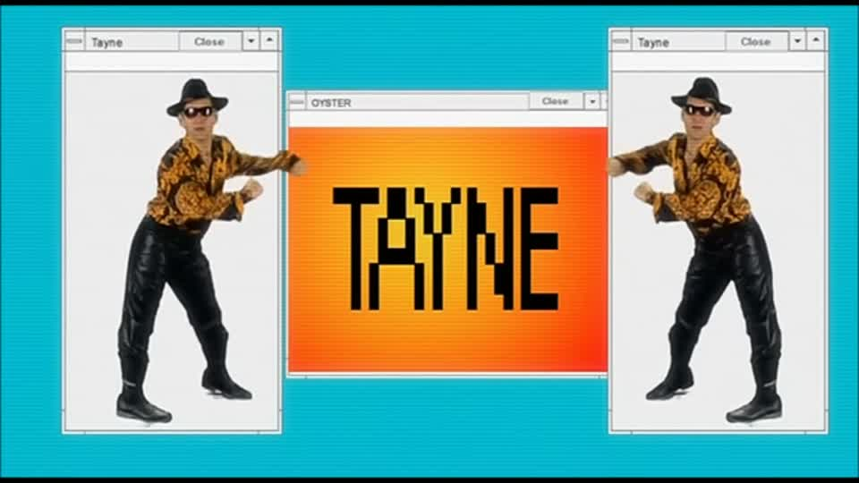
Generated interactive clone
squat
Original reference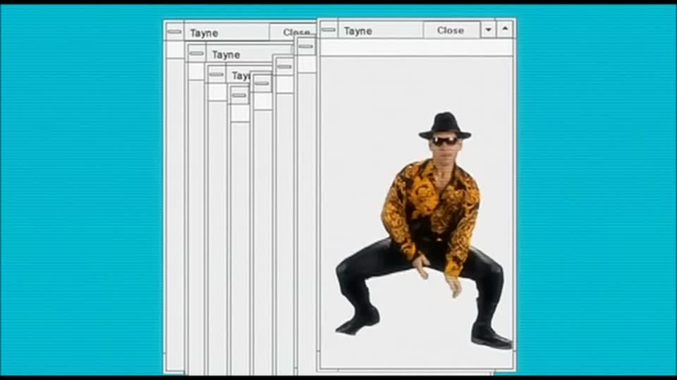
Generated interactive clone
hat
Original reference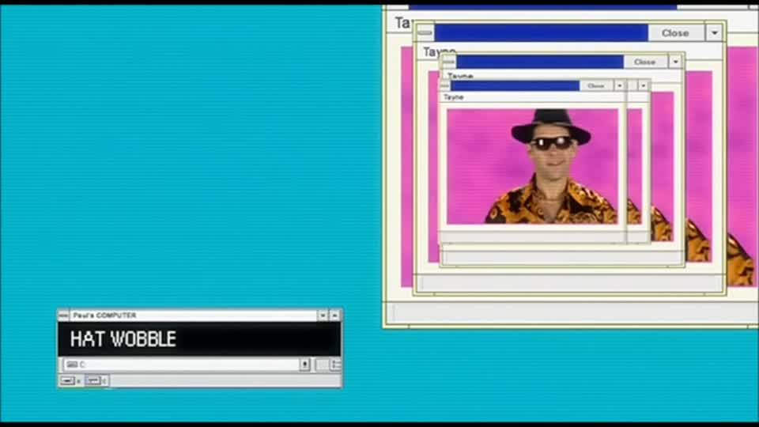
Generated interactive clone
flar
Original reference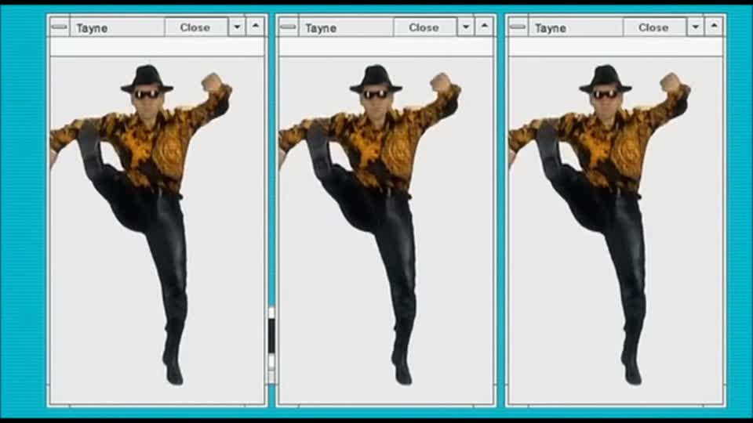
Generated interactive clone
nsfw
Original reference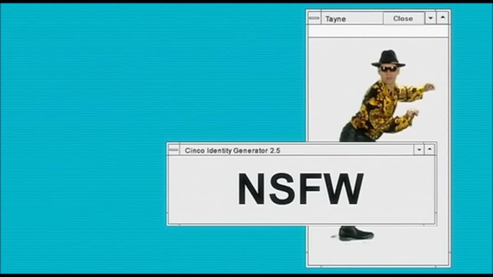
Generated interactive clone
call
Original reference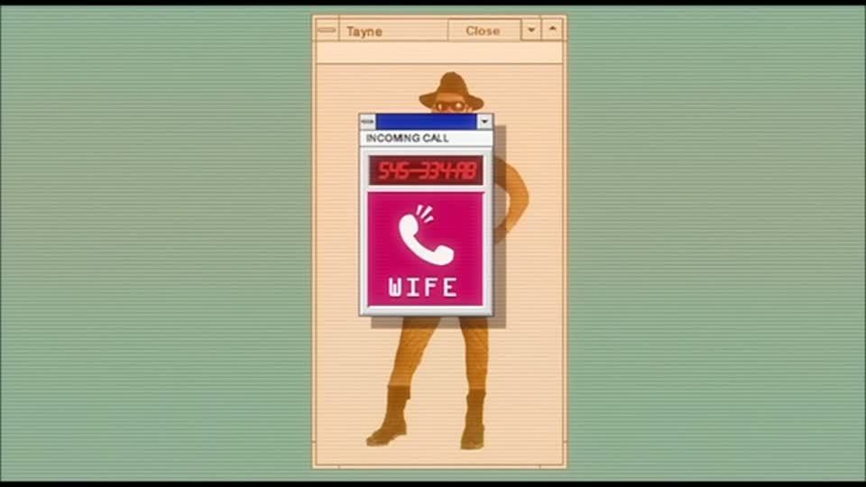
Generated interactive clone
chaos
Original reference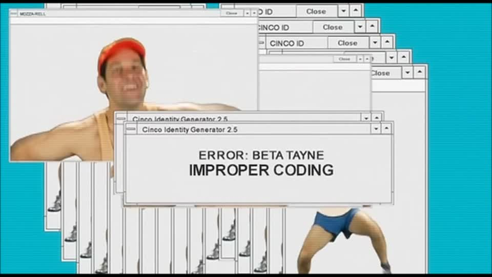
Generated interactive clone
No head overlays or face pasting. Image and video models render coherent people; any framing, texture, timing adjustment or background removal operates on the complete generated clip. Printer output is virtual. No public deployment.